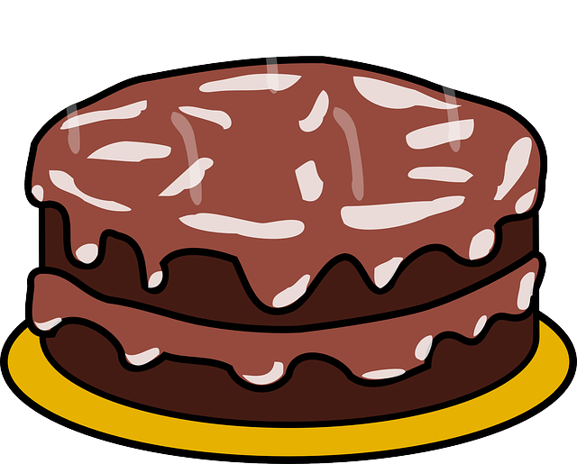
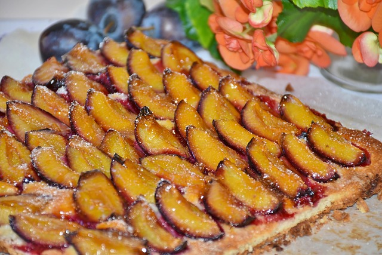
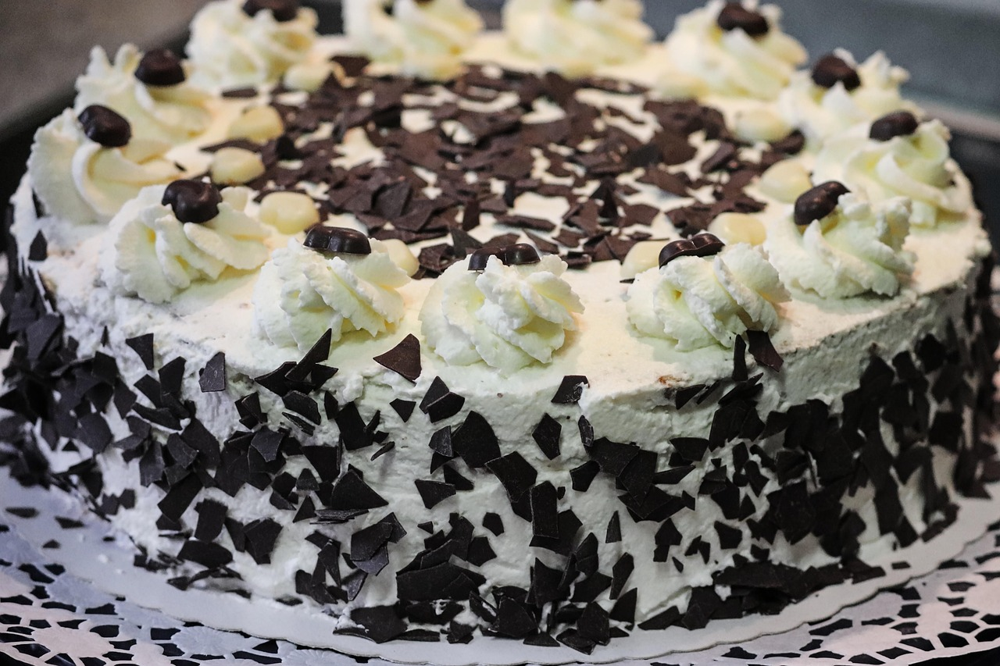

Lernfeld 10a
Zwetschgenkuchen
Ein Zwetschgenkuchen ist ein fruchtig-saftiger Klassiker, der mit süß-säuerlichen Zwetschgen auf einem buttrigen Teig gebacken wird. 🍰
Schokoladenkuchen
Ein Schokoladenkuchen ist ein himmlisch saftiger Genuss, der mit seinem intensiven Schokoladengeschmack jeden Schoko-Liebhaber verführt. 🍫

Schwarzwälder-Kirsch Kuchen
Ein köstlicher Klassiker mit saftigen Kirschen, zarter Sahne und einem Hauch von Schokolade. 🍒
